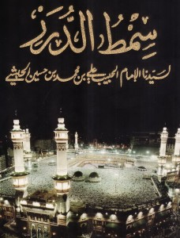
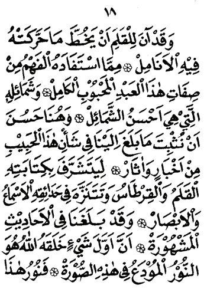
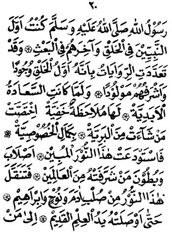
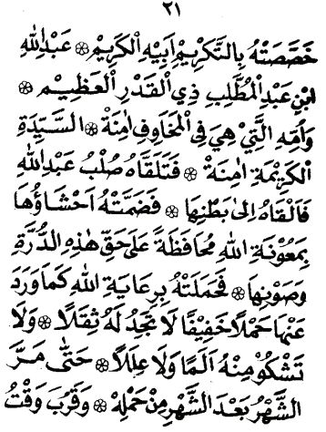
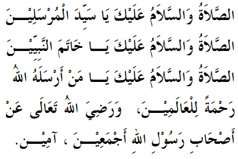

Simthud Durar
Bagian 1
Cover

Biografi Pengarang
Al-Habib Ali bin Muhammad bin Hussein Al-Habsyi
Beliau dibesarkan di bawah asuhan dan pengawasan kedua orang tuanya; ayahandanya, Al-Imam Al-Arif Billah Muhammad bin Husin bin Abdullah Al-Habsyi dan ibundanya; As-Syarifah Alawiyyah binti Husain bin Ahmad Al-Hadi Al-Jufri, yang pada masa itu terkenal sebagai seorang wanita yang salihah yang amat bijaksana.
Pada usia yang amat muda, Habib Ali Al-Habsyi telah mempelajari dan mengkhatamkan Al-Quran dan berhasil menguasai ilmu-ilmu zahir dan batin sebelum mencapai usia yang biasanya diperlukan untuk itu. Oleh karenanya, sejak itu, beliau diizinkan oleh para guru dan pendidiknya untuk memberikan ceramah-ceramah dan pengajian-pengajian di hadapan khalayak ramai, sehingga dengan cepat sekali, dia menjadi pusat perhatian dan kekaguman serta memperoleh tempat terhormat di hati setiap orang. Kepadanya diserahkan tampuk kepimpinan tiap majlis ilmu, lembaga pendidikan serta pertemuan-pertemuan besar yang diadakan pada masa itu.
Selanjutnya, beliau melaksanakan tugas-tugas suci yang dipercayakan padanya dengan sebaik-baiknya. Menghidupkan ilmu pengetahuan agama yang sebelumnya banyak dilupakan. Mengumpulkan, mengarahkan dan mendidik para siswa agar menuntut ilmu, di samping membangkitkan semangat mereka dalam mengejar cita-cita yang tinggi dan mulia.
SIMTHUD DURAR - UNTAIAN MUTIARA Oleh: Al-Habib Ali bin Muhammad bin Hussein Al-Habsyi.
Bagian 2
Yaa Rabbi Sholli ...
1. Alhamdulillahi
Artinya - Indonesia
Dengan nama Allah, Yang Maha Pengasih lagi Maha Penyayang. Segala puji bagi Allah, yang amat teguh kekuasaan-Nya. Amat jelas bukti-bukti kebenaran-Nya. Terbentang luas kedermawanan dan kemurahan-Nya. Mahatinggi kemuliaan-Nya, Mahaagung kedudukan-Nya.
Diciptakan segalanya dengan penuh hikmah. Lalu diliputinya dengan ilmu-NYa. Dihamparkan bagi mereka limpahan karunia-Nya. Denqan kadar pembagian yang ditentukan dalam kehendak-Nya. Maka diutus kepada mereka, demi rahmat-Nya. seorang termulia di antara makhluk-Nya. terkemuka di antara hamba-hamba-Nya.
lradah-Nya yang azali menghendaki, Mencipta hamba yang amat dikasihi ini. Maka tersebarlah pancaran kemuliaannya. Di alam nyata ataupun tersembunyi.
Aduhai, betapa agung anugerah ini. Dilimpahkan oleh Dia Yang Maha Pemurah, Maha Pemberi. Betapa tinggi nilai keutamaan ini. Datang dari Tuhan Sumber segala ihsan. Karunia teramat sempurna. Dalam bentuk insan terpuji. Kehadirannya mengharumi segenap penjuru. Menghiasnya dengan sulaman indah penuh keagungan.
2. Tajallal Haqqu
Artinya - Indonesia
Allah Mahabenar bertajalli. Dalam alam kudus-Nya yang amat luas. Menetapkan penyebaran anugerah-Nya. Pada yang dekat dan jauh tak terkecuali.
Maka hanya bagi-Nya segala puji. Tiada terhingga bilangannya. Tiada menjemukan pengulangan sebutannya. Betapapun sering diulang-ulang. Atas perkenan-Nya menampilkan di alam kenyataan. Perwujudan semulia-mulia insan. Agar seluruh makhluk beroleh kemuliaan. Tiada terhingga. Dengan rahasia keutamaan yang mengiringi kehadirannya. Tersebar merata di seluruh alam semesta.
Maka tiada satu pun rahasia itu. Menyentuh menyatu dengan qalbu yang sadar. Kecuali pasti karena curahan karunia Allah. Melalui insan tersayang ini.
Bahagia dan suka ria, berdatangan merasuki qalbu, menyambut datangnya kekasih Allah, pembawa anugerah bagi seluruh manusia
Mahaagung Dia yang telah memuliakan, wujud ini dengan nur berkilauan, meliputi semuanya, dengan keriangan dan kecantikan.
Mencapai tingkat keindahan tertinggi, menjulang mengangkasa, dengan kemuliaannya.
Mata memandang penuh damba, bentuk insan sempurna, pengikis segala yang sesat.
Meski sesungguhnya. keluhuran dan kesempurnaannya. melampaui segala yang bisa dicapai.
pengetahuan Yang mana Pun jua…
Mahasuci Allah, Tuhan Maha Pemurah. Yang dalam kitab suciAl-Quran Al-Hakim. Mengungkap berita gembira dengan firman-Nya, ‘Telah datang kePadamu. Seorang rasul dari kalangan sendiri. la selalu prihatin atas apa yang menimpamu. Sangat ia inginkan kamu beriman. la singat penyantun, sangat penyayang.
Maka siapa saja yang sampai kepadanya, berita gembira ini. Serta menerimanya dengan hati dan pikiran sehat. Niscaya ia beroleh Petunjuk. Ke arah jalan Yang lurus.
3. Wa Ash_Hadu
Artinya - Indonesia
Aku bersaksi, tiada Tuhan selain Allah. Maha Esa, tiada sekutu bagi-NYa. Kesaksian terucapkan dengan lisan. Mengungkap ketulusan dan kepatuhan. Yang terkandung dalam hati sanubari. Memperteguh tonggak-tonggak iman. Yang tertanam jauh di dalam dada. Rahasia hakikatnya tampak hanya bagi mereka. Yang tulus patuh tiada sedikit pun ragu padanya.
Dan aku bersaksi bahwasannya. Sayyidina Muhammad adalah hamba Allah. Yang benar dalam ucapan dan perbuatannya. Dan menyampaikan atas nama Allah. Apa yang harus disampaikan.
Kepada hamba-hamba-Nya. Tentang yang diwajibkan atau yang dianjurkan-Nya. Dialah hamba Allah yang diutus. Kepada penghuni alam seluruhnya. Pembawa berita gembira di samping ancaman derita. Maka ia pun menyampaikan risalah. Dan menunaikan amanah. Sehingga umat dalam jumlah besar. Beroleh hidayah Allah dengan perantaraannya.
Jadilah ia pelita penerang dan bulan purnama. Bagi pencari cahaya penembus kejahilan gelap gulita
Aduhai, betapa agung karunia Allah. dilimpahkan atas manusia. Betapa luas nikmat Allah bertebaran hikmahnya. Di lautan dan daratan luas merata.
Ya Allah, ya Tuhan kami. Limpahkan shalawat dan salam. Yang terbesar dan mencakup segalanya. Teramat suci, luas jangkauannya. Atas diri insan ini. Yang dengan seksama memenuhi kewajiban perhambaan pada Tuhannya. Dengan menyandang segala sifat sempurna. Dan bersungguh-sungguh dalam berbakti kepada llahi. Serta menghadapkan diri kepada-Nya. Dengan sebaik dan sesempurna cara.
Shalawat rahmat yang mengukuhkan. Jalinan ikatan dengan pribadinya. Bagi si pembaca shalawat atas dirinya. Menjadikan hatinya terang benderang. Tersentuh nur kecintaan dan kerinduan padanya. Dan memasukkannya dengan inayah Allah. ke dalam kelompoknya.
Demikian pula atas segenap keluarganya. Sefta para sahabatnya. Yang menduduki puncak derajat yang tinggi. Karena dekat kepadanya.
Dan bernaung di bawah bayangbayang kemuliaan sejati. Dengan mencintainya sepenuh hati.
Shalawat dan salam terus-menerus tiada hentinya. Selama embusan angin mengharumi mayapada. Menyebar sebutan indah mereka semuanya.
4. Amma Ba'du
Artinya - Indonesia
Amma ba’du.
Manakala iradat Allah dalam ilmu-Nya yang qadim. Berkenan menampakkan inti kekhususan, bagi manusia yang mulia. Dengan keutamaan dan penghormatan. Terwujudlah dengan kodrat gemilang. Nikmat llahiyang luas merata. Serta anugerah-Nya yang melimpah ruah.
Maka terkuaklah karsa cipta-Nya. Di alam mutlak tiada berbatas. Menyingkap “keindahan” disaksikan pandangan mata. Mencakup segala sifat keindahan dan keelokan sempurna.
Dan berpindah-pindahlah ia dengan segala keberkahan. Dalam sulbi-sulbi dan rahim-rahim yang mulia. Tiada satu pun sulbi yang merangkumnya. Kecuali beroleh nikmat Allah nan sempurna. Laksana bulan purnama. Berpindah-pindah dalam orbitnya. Agar setiap tempat yang didiaminya. Ataupun jalan yang dilaluinya. Meraih kemuliaan tiada terhingga.
Demikianlah ditetapkan dalam suratan takdir azali. Menampakkan rahasia nur ini. Hanya dalam diri mereka. Yang beroleh kekhususan dan keistimewaan. Sehingga tiap kediamannya. Selalu dalam sulbi-sulbi megah dan anggun. Serta rahim-rahim yang suci bersih.
Sampai tiba saat ia datang ke alam nyata. Sebagai manusia, tiada sama dengan manusia biasa. Bagaikan nur cahaya benderang. Penampilannya mencengangkan akal dan pikiran.
Maka tergeraklah jiwa dan semangat penulis ini. Mencatat apa yang sampai kepadanya. Tentang keajaiban nur mulia ini.
Meski lidah tak’kan mampu mengungkap sifat-sifatnya walaupun sekelumit atau lebih sedikit.
Tapi sekadar penawar hati para pendengar. Yang termasuk kalangan khusus di antara kaum mukminim. Dan penghibur mereka yang terpaut hatinya. Pada pesona nur Yang terang ini.
Sebab bagaimana mungkin. Pena para penulis mampu melukis. Tentang segala sesuatu yang bersangkutan. Dengan manusia Paling utama. Di antara manusia seluruhnYa.
Namun hatiku tergerak. Menuliskan yang kuhafal selama ini. Tentang riwayat hidup manusia termulia. Di antara makhluk semuanya. Juga tentang karunia agung yang dilimpahkan Allah. Pada peristiwa kelahirannya. Yang meliputi seluruh penghuni alam semesta. Dan panji-panjinya yang berkibar megah. Di segenap penjuru jagat raya. Terus-menerus sepanjang pergantian hari, bulan, dan tahun. Semuanya itu didorong semata-mata. Oleh kegandrunganku pada pribadi luhur ini. Serta kerinduanku ‘tuk mendengarkan selalu. Sebutan sifat-sifatnya yang serba agung.
Dan kiranya Allah berkenan melipatgandakan manfaatnya. Bagi si pembicara ataupun pendengarnya. Sehingga keduanya’kan memasuki pintu syafa’at. Dan menghirup sejuknya kenikmatan itu.
5. Wa Qad Aana



Artinya - Indonesia
Kini tiba saat penaku ini. Menggoreskan yang digerakkan jari tanganku. Yang bisa terjangkau oleh pikiran. Tentang sifat hamba yang sempurna dan dikasihi ini, serta perilakunya yang terluhur di antara semua perilaku
Dan di sinilah sepatutnya kutuliskan. Apa yang telah sampai ke pengetahuanku. Tentang berita dan kisah insan tercinta ini. Agar kalam dan keftas beroleh kemuliaan. Pendengaran dan penglihatan pun berkesempatan, Bertamasya dalam taman-tamannya yang indah mempesona.
Telah sampai kepada kami. Dalam hadits-hadits yang masyhur. Bahwa sesuatu yang mula peftama dicipta Allah. lalah nur yang tersimpan dalam pribadi ini. Maka nur insan tercinta inilah. Makhluk pertama muncul di alam semesta. Darinya bercabang seluruh wujud ini. Ciptaan demi ciptaan. Yang baru datang ataupun yang sebelumnya.
Sebagai mana di riwayatk an Abdurrazzaq. Dengan sanadnya yang sampai pada Jabir bin Abdullah Al- Anshari, semoga Allah meridhai keduanya.
Bahwasanya ia pernah bertanya, “Demi ayah dan ibuku, ya Rasulullah, Beri tahukanlah kepadaku tentang sesuatu. Yang diciptakan Allah sebelum segalanya yang lain. Jawab beliau, “Wahai Jabir, sesungguhnya Allah, Telah menciptakan nur nabimu, Muhammad, dari nur-Nya. Sebelum sesuatu yang lain”
Dan telah diriwayatkan oleh Abu Hurairah, Bahwasanya Nabi SAW telah bersabda, ‘Aku adalah yang pertama di aqtara para nabi dalam penciptaan. Namun yang terakhir dalam keiasulan…”
Banyak pula riwayat lain menyatakan. Bahwa beliaulah yang pertama adanya. Dan termulia di antara mereka semua.
Dan manakala “kebahagiaan abadi” menampakkan. Pengamatannya yang tersembunyi. Mengkhususkan manusia yang dipilihnya. Dengan kekhususan yang sempurna. Dititipkannya nur benderang ini. Pada berbagai sulbi dan rahim yang dimuliakan, di antara penghunijagat raya. Dan berpindah-pindahlah ia, dari sulbiAdam, Nuh, dan lbrahim. Sehingga pada akhirnya. Sampailah ia ke ayahandanya. Yang terpilih menerima kehormatan tiada terhingga: Abdullah bin Abdul Muththalib yang bijak dan benribawa. Serta ibundanya, Aminah, yang mulia. Yang selalu merasa aman dan tenteram. Meski di tengah apa saja yang menggelisahkan.
Maka disambutlah ia oleh sutbi Abdullah. Dan diteruskan kepada Aminah, istrinya. Yang merangkumnya dengan penuh kasih sayang. Demi menjaga dan memelihara mutiara amat berharga. Dengan pertolongan Allah, yang selalu mendampinginya.
la pun mengandungnya di bawah pengawasan Allah. Dengan segala kemudahan dan keringanan. Tiada sedikit pun berat terasa. Ataupun sakit diderita.
Bulan demi bulan berlalu. Sampai hampir tiba saatnya. Kandungan itu lahir ke alam nyata. Agar luapan keutamaannya. Menggenangi penghuni alam semesta. Tebaran keluhuranya. Melingkungi mereka semua.
6. Wa Munzu
Artinya - Indonesia
Sejak berpaut padanya mutiara indah terpelihara ini, alam seluruhnya bergemilang riang gembira, di pagi hari maupun di kala senja, dengan kian mendekatnya, saat terbit cahaya peliat penerang ini.
Demikian pula semua pandangan mata. Menatap bersama menanti kelahirannya. Penuh kerinduan memungut permata baiduri tiada ternilai.
Binatang peliharaan Quraisy pun, semuanya bagaikan menyeru dengan fasih kata-kata, mengumumkan berita nan sempurna. Setiap wanita yang mengandung di tahun itu, niscaya ia melahirkan bayi lelaki. Hal itu semua disebabkan, berkah kemuliaan imam pembawa bahagia ini.
Demikianlah bumi dan langit. Bergelimang wangi-wangian riang gembira. Menanti lahirnya insan termulia. Di antara segenap penghuninya ke alam nyata. Setelah tersimpan sekian lama. Dalam beberapa sulbi dan rahimt berganti-ganti.
Maka berkenanlah Allah SWT. Menampakkan karunia gemilang-Nya. Pada wujud semesta ini. Menghidangkan rahmah penghormatan dan kemuliaan.
7. Fahiina
Artinya - Indonesia
Dan ketika hampir tiba saatnya. Kelahiran insan tercinta ini. Gema ucapan selamat datang yang hangat. Berkumandang di langit dan di bumi. Hujan kemurahan llahi tercurah. Atas penghuni alam dengan lebatnya. Lidah malaikat bergemuruh. Mengumumkan kabar gembira.
Kuasa Allah menyingkap tabir rahasia tersembunyi. Membuat nurnya terbit sempurna di alam nyata. Cahaya mengungguli segenap cahaya.
Ketepatan-Nya pun terlaksana. Atas orang-orang pilihan. Yang nikmat-Nya disempurnakan bagi mereka. Yang menunggu detik-detik kelahirannya. Sebagai penghibur pribadinya yang beruntung. Dan ikut bergembira mereguk nikmat berlimpih ini.
Maka hadirlah dengan taufik Allah. Sayyidah Maryam dan Sayyidah Asiyah. Bersama keduanya datang mengiring. Sejumlah bidadari surga, yang beroleh kemuliaan agung, Yang dibagi-bagikan oteh Ailah, atas mereka yang dikehendaki
Dan tibalah saat yang telah diatur Allah. Bagi kelahiran ini. Maka menyingsinglah fajar keutamaanan cerah. Terang benderang menjulang tinggi….
Dan lahirlah insan pemuji dan terpuji. Tunduk khusyu’ di hadapan Allah. Dengan segala penghormatan tulus dan sembah sujud
8. Mahaalul Qiyaam
Artinya - Indonesia
Artinya
9. Wahiina Baroza
Artinya - Indonesia
Dan pada saat Nabi SAW dilahirkan ibunya. la lahir seraya menunjukkan pandangan ke arah langit. Bagai isyarat ia beroleh kemuliaan. Serta kehormatan yang tinggi menjulang.
Adapun Maulid-nya hari Senin bulan Rabi’ulAwwal. Tempat kelahiran serta makamnya di Al-Haramain
Dan telah diriwayatkan bahwa beliau dilahirkan. Dalam keadaan telah terkhitan. Bermata bagaikan bercelak. Tali pusatnya telah terpotong bersih.
Semua itu terlaksana dengan kuasa qudrah llahi. Berkat keluhuran kedudukannya, di sisi Tuhannya.
Dan bersamaan dengan waktu kelahirannya. Tampak beberapa keajaiban. Mambuktikan bahwa ia insan termulia. Dl antara semua makhluk. Paling utama di antara yang dikasihi Allah.
Sebagaimana diriwayatkan Abdurrahman bin Auf dari ibunya bernama Syaffaa’ (semoga Allah meridhai keduanya), Pada saat Rasulullah SAW dilahirkan oleh Aminah. la kusambut dengan kedua telapak tanganku
Dan terdengar tangisnya pertama kali. Lalu kudengar suara berkata, ‘Semoga rahmat Allah atas dirimu.’ Dan aku pun menyaksikan cahaya benderang di hadapannya. Menerangi timur dan barat. Hlngga aku dapat melihat. Sebagian gedung-gedung bangsa Rum.
Lalu kubalut ia dalam pakaiannya dan kutidurkan. Namun tiba-tiba kegelapan dan ketakutan. Datang meliputi diriku dari kananku. Sehinggaku menggigil karenanya. Dan kudengar suara bertanya, ‘Ke mana ia kau bawa pergi?’. ‘Ke barat!’ jawab suara lainnya.
Lalu perasaan itu menghilang dari diriku. Namun sejenak kemudian kembali lagi. Kegelapan dan ketakutan meliputi diriku. Datang dari sebelah kiri. Hingga tubuhku menggigil karengnya
Dan kudengar lagi suara bertanya, ‘Ke mana ia kau bawa pergi?’. ‘Ke timur!’ jawab suara lainnya
Peristiwa itu melekat dalam pikiranku. Sampai tiba saat beliau menjadi utusan Allah. Maka aku pun termasuk di antara orang-orang pertama. Yang mengikutinya dalam lslam…
Dan betapa banyak riwayat hidupnya. Mencatat mu’jizat-mu’jizat besar. Serta bukti-bukti gemilang tentang kenabiannya. Yang semuanya menunjukkan tinggi kedudukannya di sisi Tuhannya.
Dan bahwa inayah Allah. Di setiap saat menjaganya. Dan bahwasanya dialah sebaik penunjuk. Yang menunjukkan jalan yang lurus.
10. Tsumma Innahu

Artinya - Indonesia
Kemudian setelah sempurna kelahirannya
Sesuai yang dikehendaki qudrat llahi
Dan nur cahayanya yang terang
Bertebaran di seluruh mayapada
Berlombalah para inang pengasuh ingin menyusuinya
Makin besar pula keinginan penghuni bumi memeliharanya
Dan terlaksanalah kehendak Allah
Mahaagung lagi Mahabijaksana
Yang ditetapkan-Nya semenjak dahulu kala
Bahwasanya Sayyidah Hatimah pating utama
Mendidik mengasuh insan tercinta ini.
Maka tatkala kedua matanya memandangnya
Lalu terungkap rahasia qudrah Rabbaniyyah pada dirinya
Tercurahlah keriangan dan suka cita dalam hatinya
Menunjukkan ia beroleh kehormatan di sisi Allah
Dalam kadar besar tiada terhingga
Kasih.sayangnya segera tertuju pada bayi mulia itu
Seperti nanya para ibu terhadap putra kandungnya
Dan besarlah keinginan untuk menyusuinya
Dengan harapan memperoleh berkahnya
Yang tersebar luas meliputi alam semesta
la pun mohon dari ibundanya yang mulia
Agar menyerahkan padanya
Tugas menyusui dan mengasuh, sefta mendidiknya
Dengan cinta kasih sayang sepenuhnya
Maka diluluskan permohonan itu
Setelah menyaksikan ketulusan ucapanya
Dengan segala tanda yang meyakinkannya
Mengenai cara pemeliharaan yang sempurna
Segera Halimah membawanya pulang ke kampung
Dengan hati riang dan ceria
Diiring penjagaan Allah dan inayah-Nya
Yang terus-menerus menyertainya
Dalam perjalanan pulang itu
la menyaksikan berbagai mu’jizat
yang mengherankan .
dan membuatnya bertambah yakin
betapa besar kemuliaan bayi yang bersamanya
Unta tua dan keledai miliknya yang lemah
tiada berdaya
Kini berlomba mengalahkan yang lain dalam kafilahnya
Air susu unta dan kambingnya
Memancar deras dengan lebatnya
Membuat takjub tiap orang melihatnya
Dua tahun Nabi SAW tinggal bersama Halimah dan suaminya
Selama itu keduanya menikmati berkah dan mu’jizat-mu’jizatnya
Yang mengagumkan setiap mata yang menyaksikan
dan rahasia hikmahnya tersebar merata di mana-mana
Sampai pada suatu hari
Ketika sedang menggembala domba
datang kepadanya beberapa malaikat
Membawa penghormatan khusus baginya
Yang keberkahannya meliputi umat manusia
Mereka membaringkannya dengan hati_hati
Lalu membelah dadanya dengan lemah lembut
Dan mengeluarkan apa yang mereka keluarkan
Lalu menyimpankan rahasia ilmu dan hikmah ke dalamnya
Tiada suatu kotoran mengganggu
yang dikeluarkan malaikat dari hatinya
tapi mereka hanya menambahkan
kesucian di atas kesucian….
Dalam pada itu
Beliau tetap dalam kekuatan dan ketabahan hati
Menyaksikan tanda-tanda kebesaran kuasa llahi
Yang dialami dalam dirinya sendiri
Namun berita kejadian itu akhirnya
sarnpai juga ke pendengaran Halimah yang baik hati
la pun gelisah dan khawatir
Akan bencana yang mungkin menimpa putranya itu
Tidak diketahuinya bahwa ia dijaga oleh Tuhannya
Dengan penjagaan amat sempurna
Maka dibawanya pulang segera kepada bundanya
Meski perpisahan itu berat terasa dalam hatinya
namun semata-mata disebabkan kegundahan
Dan kecemasan atas keselamatannya
Padahal ia sebenarnya
Dengan karunia Allah
Dalam benteng penjagaan yang kokoh kuat
Serta kedudukan amat tinggi dan mulia
11. Fanasya_a
Artinya - Indonesia
Rasulullah SAW tumbuh dengan sifat-sifat paling sempurna
Dikelilingi selalu pemeliharaan Allah Maha Kuasa
Serta diliputi rahmat-Nya berlimpah-limpah
la tumbuh dalam sehari .
Seperti bayi lain dalam sebulan
Keluhuran pribadinya tampak sempurna
Sejak usianya yang amat muda
Menjadi saksi bahwa dialah penghulu keturunan Adam semuanya
Bintang-bintang kemujuran selalu bersamanya
demikian pula segenap benda di alam ini
menampakkan kesetiaan dan kepatuhan padanya
Tiap kali ia “meniupi” penderita sakit
Niscaya Allah melimpahkan kesembuhan baginya
Tiap kali berdoa memohon hujan
Niscaya Allah selalu menurunkannya
Demikian keadaannya sehari-hari
Sampai ia telah melewati masa mudanya
Dan mencapai usia dewasa
Saat itulah Allah mengkhususkannya
Dengan kemuliaan hanya baginya seorang
Dan turunlah Jibril Ar-Ruhul Amin
Membawa kabar gembira dari Tuhan Seru Sekalian Alam
Membacakan baginya ayat-ayat suci Al Quran Al-Hakim,
“,…Dan sesungguhnya kepadamu telah diberikan Al-Quran
dari hadirat Allah, yang Maha Bijaksana lagi Maha Mengetahui.”
Adapun mula peftama diturunkan kepadanya
Di antara ayat-ayat suci padat berisi
Yang berasal dari hadirat Allah SWT ialah,
“Bacalah dengan nama Tuhanmu
yang mencipta manusia dari segumpal darah.
Bacalah! Tuhanmulah yang paling mulia
Yang mengajar dengan kalam
Mengajar manusia apa yang tidak ia tahu….,,
Oh… betapa agungnya kabar gembira ini
Karunia sempurna datang dari Allah
Maha Pengasih lagi Maha pemurah
Ditujukan kepada insan mulia ini
Lalu dikuatkan lagi dengan firman-Nya,
“Ar-Rahman, Tuhan Maha pemurah
mengajarkan Al-euran
mencipta insan
lalu diajarinya fasih perkataan…”
Dan tiada syak lagi
tentunya beliaulah
Insan yang dimaksud dengan pemberian ajaran itu
darl hadirat Allah, yang Maha Rahman dan Rahim
12. Tsumma InnaHu
Artinya - Indonesia
Adapun Nabi SAW
Setelah kepadanya wahyu suci diturunkan
Segera bertindak memikul beban dakwah dan tabligh
Menyeru manusia ke jalan Allah dengan penuh kesadaran
Yang diikuti dengan tulus dan patuh
Oleh mereka yang berpikiran terang
Di antara kaum Muhajirin dan Anshar
Yang beroleh kehormatan tertinggi
Mendahului yang lain memenuhi seruan ini
Sesuai yang tercantum dalam takdir llahi
Dan dengan tekad kuat Nabi tercinta ini
Demikian pula para sahabatnya
Allah berkenan menyempurnakan agama ini
Dan dengan kepahlawanan mereka pula
Allah menumpas habis kaum kafir dan ingkar
Banyak sekali mu’jizat hebat berkaitan dengan dirinya
Membuktikan bahwa dialah yang termulia
Di antara penghuni bumi dan langit seluruhnya
Di antaranya memperbanyak yang sedikit
Kesembuhan si Penderita sakit
Ucapan salam terdengar dari seonggok batu
Ketaatan pohon kepadanya
Terbelahnya buah purnama
Pemberitahuan tentang hal-hal ghaib
Rintihan pokok kurma yang rindu padanya
Yang kesemuanya jauh menembus kebiasaan yang berlaku
Demikian pula biawak dan menjangan
Memberi kesaksian tentang kenabian dan kerasulannya
Dan masih banyak lagi bukti gemilang
Serta mu’jizat menakjubkan
Yang dijadikan Allah sebagai pendukung risalahnya
Dan hanya baginya dikhususkan di antara semua makhluk-Nya
Banyak pula tanda ghaib mendahului nubuwahnya .
Dan merupakan alamat terkuat bagi kenabian dan kerasulannya
Tersiarnya itu semua secara meluas
Mendatangkan bahagia bagi kaum beriman yang tulus
Namun menambah malang si kafir ataupun munafik
Dan tiada satu pun orang berpikiran sehat
Kecuali pasti menerimanya dengan keyakinan
Serta penyerahan sepenuhnya
13. Wa Mina Syarafi

Artinya - Indonesia
Dan di antara kehormatan yang dikhususkan
Bagi Rasul termulia ini
Mi’rajnya ke hadirat Allah Maha Penyayang
Yang kebaikan-Nya selalu melimpah
Yang karunia-Nya selalu tercurah
Serta adanya bukti-bukti kuasa-Nya yang gemilang
Yang dialami pada peristiwa itu
Dan kemuliaan bagi langit-langit serta penghuninya
Dengan terbitnya nur pelita” itu bagi mereka
Maka Rasulullah SAW mengarungi angkasa
Bersama Jibril Al-Amin
Menuju hadirat Allah Al-Malikul Jalil
Diiringi segala kemuliaan dan penghormatan
Tiada penghuni yang dimasukinya
Kecuali segera menyongsong kedatangannya
Dengan penghormatan dan berbagai ucapan
selamat datang
Setiap rasul yang dilewati
Menyampaikan kabar gembira yang diketahuinya
Tentang tinggi kedudukannya di sisi Tuhannya
Sampai ia melampaui ke tujuh lapis langit
Dan mencapai hadirat mutlak tiada berbatas
Di sana ia diliputi belaian karunia lembut
Penuh keakraban
Datang dari hadirat llahi
.
Meyambutnya dengan ragam ucapan selamat
Memuliakannya dengan berbagai anugerah besar
Melimpahkan padanya seindah-indah pemberian
Dan memanggilnya dengan semulia-mulia salam
Setelah ia sendiri menunjukkan puji-pujian ke hadirat llahi,
“At-tahiyyatuI mubarakatus shalawatut thayyibat. “
Aduhai, betapa lembut belaian karunia yang diterimanya itu
Betapa indah pertemuan yang agung itu
Dalam hadirat serba gemilang
Saat dzat (Rasul) memberi kesaksiannya
Bagi keagungan Dzat (Allah) Tuhannya.
Seraya merangkum rahmah llahiyyah penuh kasih sayang
serta anugerah-Nya yang melimpah ruah
dalam suasana khusyu’ dan penyerahan diri kepada-Nya.
Itulah tingkatan yang memaksa setiap idaman
jatuh berderai memendam sesal dan putus asa
demi melihatnya amat tinggi
tinggi sekali dari segala jangkauan
Banyak sekali pengalaman halus melekat pada jiwa Rasul
Yang diperolehnya dalam perjumpaan ketika itu
Serta ilmu dan pengetahuan yang dicapainya
Tatkala… Allah mewahyukan kepada hamba-Nya
Apa yang diwahyukan-Nya
Dan tiada hati Rasul mendustakannya….
Itu semata-mata karunia hadirat Maha Pengasih
Dikhususkan bagi insan ini seorang
Simpati penuh kasih sayang ditujukan kepadanya
Tiada mungkin jin dan manusia mana pun merangkumnya
Itulah pemberian teramat istimewa
Pena siapa pun tak’kan berani mencoba
Menguraikan tentang hakikatnya
Lidah pun tak’kan mampu mengungkapkan
Makna halus yang tersembunyi padanya
Hadirat Allah yang maha-luas mengkhususkannya
Hanya bagi pandangan Nabi yang menatap dengan saksama
Dan telinganya yang mendengar dengan cermat
Maka tiada keinginan seseorang patut mengidamkan
Tersingkap baginya rahasianya yang tersembunyi
Atau meliput cahaya nurnya dengan sempurna
Karena itu adalah hadirat terlalu agung
Untuk bisa dilihat para Pengamat
Dan tingkatan tiada mungkin tercapai
Kecuali bagi penghulu para rasul
Maka sungguh berbahagia hadirat Muhammad
Menerima anugerah agung berlimpah
Berdatangan dari hadirat Allah Yang Maha Esa
Aduhai, betapa beruntungnya ia
Mencapai kedudukan setinggi ini…
14. Wa Haitsu Tasyarrofa
Artinya - Indonesia
Dan manakala telinga telah beroleh kehormatan
mendengarkan berita-berita
sekitar insan tercinta tersayang ini
seda kemuliaan yang menyertainya
dalam alam nyata ataupun yang ghaib
tergeraklah keinginan penulis
menyebut sebagian kesempurnaan pemimpin ini
dalam bentuk tubuh serta akhlaqnya
Agar para pendengar dapat mengetahui
Kemuliaan yang dikaruniakan Allah atas dirinya
Pada sifat-sifat indah dan perilaku menarik
Yang dikhususkan baginya oleh inayah Khaliqnya
Dan kini kuharap pendengar uraianku ini
Mengikuti dengan penuh perhatian
Sifat-sifat luhur yang ‘kan kucatat baginya
Yang menempatkan insan mulia ini
Dalam kedudukan yang amat tinggi
Sebab tiada manusia mana pun bisa menyamai junjungan ini
Dalam bentuk fisik dan perilakunya
Dan tiada seorang pun mampu menyelami rahasia hikmah Allah
Yang tersembunyi dalam keindahan tubuh dan kesempurnaan akhlaqnya
Pemeliharaan Allah sejak semula
Telah mencetaknya dalam tabiat dan akhlaq luhur
Serta membentuknya dengan rupa elok
Bagaikan bulan purnama
Beliau seorang berperawakan sedang
Warna kulitnya putih kemerah-merahan
Dahinya lebar serasi
Panjang rambutnya sampai batas telinga
Kedua lengan dan kaki serta persendian
Semuanya dalam bentuk dan ukuran sempurna
Mantap dalam keseluruhan keindahan
Serta keserasian sifat-sifatnya
Tiada seorang pun menyamainya
Dalam kesempurnaan penglihatan, pendengaran,
Ataupun ucapannya
Sungguh Allah telah menciptakannya dalam bentuk terbaik
Padanya, segala keindahan terangkum dan terkhususkan
Bila ia berbicara
Mutiara-mutiara ilmu dan hikmah ditaburkannya
Tiada seorang ahli khutbah yang ulung
Mampu membawakan ucapan rapi padat berisi
Seperti yang selalu diucapkannya
Bila mata bertamasya
Dalam taman keelokannya yang mempesona
Tiada ‘kan dijumpainya di antara seluruh wujud
Makhluk mana pun memiliki sifat setara dengannya
Dialah pemimpin yang setiap kali tertawa
cukup tersenyum dengan anggunnya
Dengan langkah tenang mantap ia berjalan
Bila tertldur hanya sekejap saja
Perilakunya lembut selembut angin sepoi nan sejuk
Wajahnya cerah secerah taman yang menyegarkan
Pribadinya perwujudan segala sifat luhur
Kasih sayang namun tegas dalam sikap
Kuat dalam tekadnya
Keanggunan, kesucian, serta rasa malu
Mengiringi selalu, menghias gerak-geriknya
Ucapan dan tindakannya teratur rapi
Sungguh sulit menyamainya
Bentuk tubuhnya sempurna
Demikian pula akhlaq yang disandangnya
Adil dan dermawan
Bila dan di mana pun ia berada….
Bila berjalan, seakan-akan turun dari ketinggian
Mendahului orang yang cepat dalam berjalan
Meski tampak selalu tenang tidak tergesa
Demikianlah ia bagai pusaka tersimpan rapi
Dalam wadah kokoh tertutup rapat
Tiada anak kunci mampu membuka pintu sifat-sifatnya
Atau bak bulan purnama
Membuat takjub akal dan pikiran
Setiap kali membayangkan keindahannya
Atau berkas cahayanya tampak bagi penglihatan
lnsan tersayang membuat iri bulan purnama
setiap kali memandangi indah wajahnya
akal dan pikiran dalam kebingungan
bila ingin menggambarkan makna hakikatnya…
Gerangan bagaimana kata-kata mampu mengungkapkan
Tentang sifat-sifat yang mendatangkan putus asa
Bagi siapa yang ingin menjelaskan
Atau betapa akal dapat mencapai
Arti dzat yang tiada sesuatu pun mungkin
Menyamai atau menyerupainya
Sungguh sempurna sifat-sifat keluhurannya
Andaikan ia menghadiahkan sinar
bagi bulan purnama
pasti tak ‘kan ia tertutup oleh gerhana
betapapun banyak cara dilakukan orang
rnencoba menguraikan sifat keluhurannya
namun sampai zaman berakhir
Takkan mungkin mereka meliputi semuanya….
15. Wa Laqod Itashofa
Artinya - Indonesia
Oh… betapa tinggi derajatnya yang agung
Betapa luas keutamaanya merata di mana-mana
Demikian luhur akhlaq Rasulullah SAW
Sehingga terasa sempit kitab-kitab besar untuk merangkumnya
Sebab beliau sebaik-baik manusia
Dalam keindahan akhlaq ataupun bentuk tubuhnya
Selalu terdepan dalam berbuat kebajikan
Lembut hatinya, luas kasih sayangnya
Terutama bagi kaum beriman semuanya
Teramat baik, teramat penyantun
Tiada berucap sesuatu melainkan berisi kebaikan
Sederhana perangainya
Singkat dan padat kalimat yang diucapkannya
Bila si miskin memanggilnya
la selalu tanggap memenuhinya segera
Dirinya bagai ayah penuh kasih sayang
Untuk si yatim-piatu atau janda yang lemah
Rendah hatinya namun amat kuat wibawanya
Membuat orang paling kuat pun
Gemetar berhadapan dengannya
Tiap jalan dilaluinya
Atau pun rumah yang dikunjunginya
Menjadi semerbak harum baunya
Sebutan tentang pribadinya
Mewangikan tiap majelis dan pertemuan
Beliau adalah pusat perpaduan
Bagi segala sifat kesempurnaan
Tiada banding dalam fisik dan perilakunya
Karena mendapat kekhususan termulia
Maka tiada satu pun perangai manusia terpuji
Melainkan pasti bersumber dari dirinya
Insan terbaik di antara mereka semua
Telah kusimpulkan sifat-sifat insan tercinta ini
dalam dirinya terkumpul kemuliaan dengan segala bentuknya
pekerti indah amat tinggi menjulang
bagai bersemayam di atas bintang nan tinggi..,
Kiranya pena telah cukup berkelana
Dengan perasaan riang ceria
Mencatat yang diketahui tentang Maulid Nabi mulia ini
Dan mengisahkan sebagian kehormatan dan penghormatan
Serta budi pekertinya yang amat luhur
Yang dikaruniakan Allah baginya
Kini tiba saat menarik kembali kendalinya
Dan sepatutnya kubacakan salam atas nabi ini
pemimpin penghuni alam:
AssaIamu ‘alayka ayyuhan-nabiyyu
wa rahmatullahi wa barakatuh
Aasalamu’alayka ayyuhan-nabiyyu
wa rahmatullahi wa barakatuh
Assalamu’alayka ayyuhan-nabiyyu
wa rahmatullahi wa barakatuh
Dan dengan itu sempurnalah penutup kata ini
Sebagaimana telah sempurna di awal pembukanya
Maka bagi Rasul
Shalawat dan salam setinggi-tingginya
Bagian 3
Doa

Artinya - Indonesia
Doa Penutup
Kini, setelah selesai menyunting
Untaian mutiara sifat Nabi SAW
Kuhadapkan diriku ke hadirat llahi
Seraya bertawasul dengan pemimpin dan kekasihku:
Muhammad SAW
Semoga Allah SWT berkenan
Menjadlkan usahaku menyusun ini
Sebagai suatu yang terpuji
dan mendatangkan ganjaran bagiku
Dan semoga Dia mencatat amalku
di antara amal-amal yang diterima-Nya
Dan permohonanku
di antara permohonan yang ikhlas ditujukan kepada-Nya
Serta memperoleh pahala-Nya
yang saling berkesinambungan
Ya Allah, ya Tuhan kami
Yang kepada-Nya tertuju semua cita dan idaman
Agar kembali setelah itu dengan segala keberhasilan
Dan di pintu keperkasaan-Nya
Dihentikan semua kafitah harapan
agar setelah itu digenangi luapan anugerah-Nya
Sesungguhnya kami menghadap kepada-Mu
Dengan semulia-mulia wasilah di sisi-Mu:
Penghulu Segenap Rasul
Hamba-Mu yang selalu benar dalam ucapannya
Yang selalu tulus terpercaya
Junjungan kami: Muhammad
Yang risalahnya meliputi seluruh jagat raya
Semoga Engkau berkenan
melimpahkan shalawat dan salam
atas dzat sempurna itu
Tempat penyimpanan amanah-Mu
Pemegang rahasia-Mu
Pengibar panji dakwah-Mu
yang mencakup segalanya
Leluhur kami yang besar
Yang Engkau kasihi dan Engkau khususkan
Dengan kemuliaan megah dan anggun
Pada setiap tempat dan kedudukan
yang dekat kepada-Mu
Pembagi karunia-Mu di antara hamba-hamba-Mu
Pengedar hidangan petunjuk-Mu
bagi mereka yang Kau kasihi
Pemuka seluruh penghuni langit dan bumi
Termulialah di antara makhluk manusia dan jin
Hamba-Mu yang Kau kasihi sepenuhnya
Yang Kau khususkan dengan sebesar kekhususan dari-Mu
Yaa Allah, ya Tuhan kami
limpahkan shalawat dan salam atas dirinya
Demikian pula keluarga dan sahabatnya
serta mereka yang dekat kepadanya dari para pencintanya
Ya Allah, ya Tuhan kami
Sesungguhnya kami menghadapkan kepada_Mu
Kedudukan terhormat Nabi mulia ini di sisi-Mu
Dan bertawasul dengan derajatnya yang tinggi di sisi_Mu
Agar Kau berkenan menjaga dan memelihara kami
Dalam segala gerak dan diam kami
Penutup
